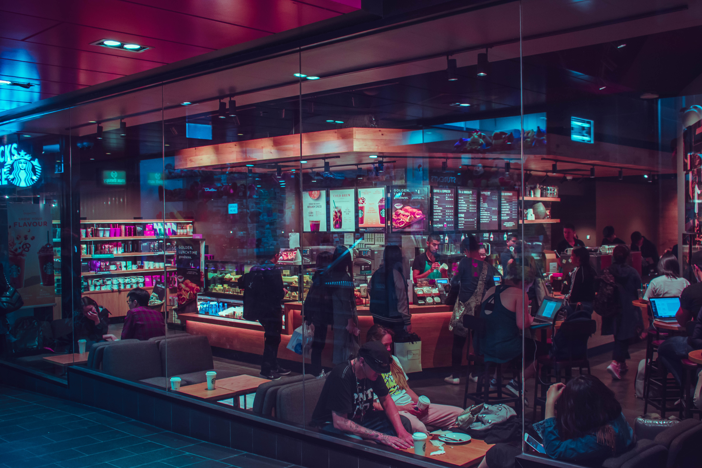

Our next meetup happens Monday, December 3 at Sensor Lab from 19:00–21:00 (doors open 18:30) and is about Dark Design Scenarios.
 Photo by kevin laminto on Unsplash
We continue our deep dive into tools that help put human values at the heart of the design process. This time we will envision the future of our designs with a particular focus on their potential darker sides.
In previous meetups, our community has identified several ways of bringing ideas from value sensitive design (VSD) into a typical UX process. One of these ways is to envision a technology’s value impact over longer time frames and at larger scales of adoption. Traditionally, only positive effects are taken into account. But we will use value scenarios to also imagine negative effects. A sort of DIY Black Mirror.
To kick off this meetup we will summarize VSD and introduce Value Scenarios. After that, we will work together to apply it to real-world design problems. We will find out how this tool can help us and how it might be developed further.
For reports of our previous meetups on VSD, see:
We meet at Sensor Lab in Utrecht on Monday, December 3. We start at 19:00 and wrap up around 21:00. (Doors open 18:30.) Admission fee is 5 euros payable at the door.
To RSVP, send an email to info@techsolidarity.nl. Hope to see you there!